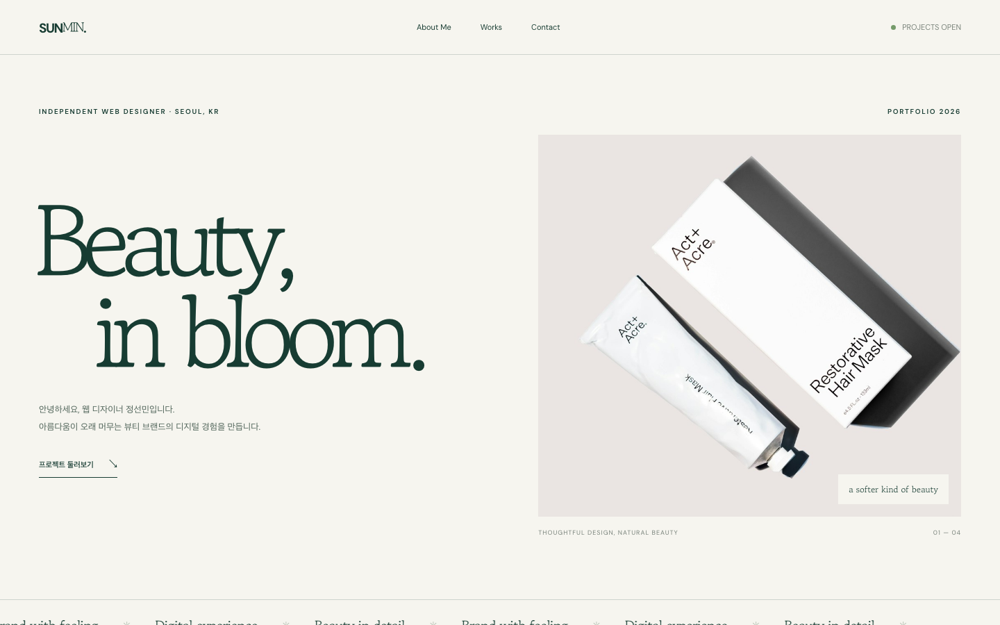

소개를 더 빠르게 읽을 수 있게
긴 디자인 철학 문단을 덜어내고 About Me에서 소개 타이틀과 역량으로 바로 이어지도록 수정했습니다.
PROJECTS OPEN
Design process / Portfolio case study
누구에게 무엇을 전달할지 고민하는 순간부터
작은 피드백을 다음 화면에 담는 과정까지
Define the problem
누구에게 무엇을 전달할 것인가
작업 이미지가 나열되어 있는 것만으로는 디자이너가 어떤 분야를 다루고, 어떤 생각으로 화면을 만드는지 충분히 전달하기 어렵습니다. 소개와 작업물, 연락처가 자연스럽게 이어지도록 구성합니다.
브랜드의 분위기는 선명하게, 작업물을 찾는 과정은 간결하게
Plan with reasons
정보 구조 · 레퍼런스 분석 · 시안 비교
퓨리토의 넓은 이미지 영역과 세로 카드 목록, 괄호로 감싼 하단 메뉴 구성을 참고했습니다. 제품 판매 정보 대신 작업 분야와 포트폴리오 탐색을 담았습니다.
레퍼런스 보기 ↗배너는 가로형으로 독립시키고, 팝업·포스터·상세페이지는 아래의 카드 세 개로 묶었습니다. 매체의 차이를 보여주면서 작업 분야를 비교할 수 있도록 했습니다.
배너를 포함한 모든 작업물을 같은 카드 목록에 배치
가로 배너 + 팝업·포스터·상세페이지 카드 3개
Bring it to the screen
최종 화면 · 이미지 · 반응형 변형
크림색 바탕과 진한 초록색, 큰 타이포그래피를 중심으로 부드러운 인상을 담았습니다. 소개와 작업물은 여백으로 구분하고, 작업물 이미지는 잘리지 않도록 구성했습니다.

넓은 가로 배너 아래에 세로 카드 세 개를 배치합니다. About Me는 이미지보다 텍스트 영역을 넓혀 소개와 역량을 읽기 쉽게 구성했습니다.
소개 이미지와 텍스트를 위아래로 전환하고, 작업물 카드는 가로 스크롤로 탐색합니다. 컨택트의 소개 문구와 메뉴도 세로로 배치합니다.
Reflect and refine
피드백 · 수정 이유 · 남은 한계
긴 디자인 철학 문단을 덜어내고 About Me에서 소개 타이틀과 역량으로 바로 이어지도록 수정했습니다.
모든 작업물을 동일한 카드로 처리하던 배치를 바꾸고, 배너를 가로형으로 분리했습니다.
배너의 제목과 설명에서 링크를 제거하고 이미지에만 작업물 페이지 연결을 남겼습니다.
현재 작업물 이미지는 구성 확인용입니다. 실제 작업물, 시안별 비교 이미지와 프로젝트별 판단 근거를 추가해야 합니다. 사용자 검증과 성과 측정은 아직 진행하지 않았습니다.
좋은 결과만큼,
그 결과에 닿는 과정을 생각합니다